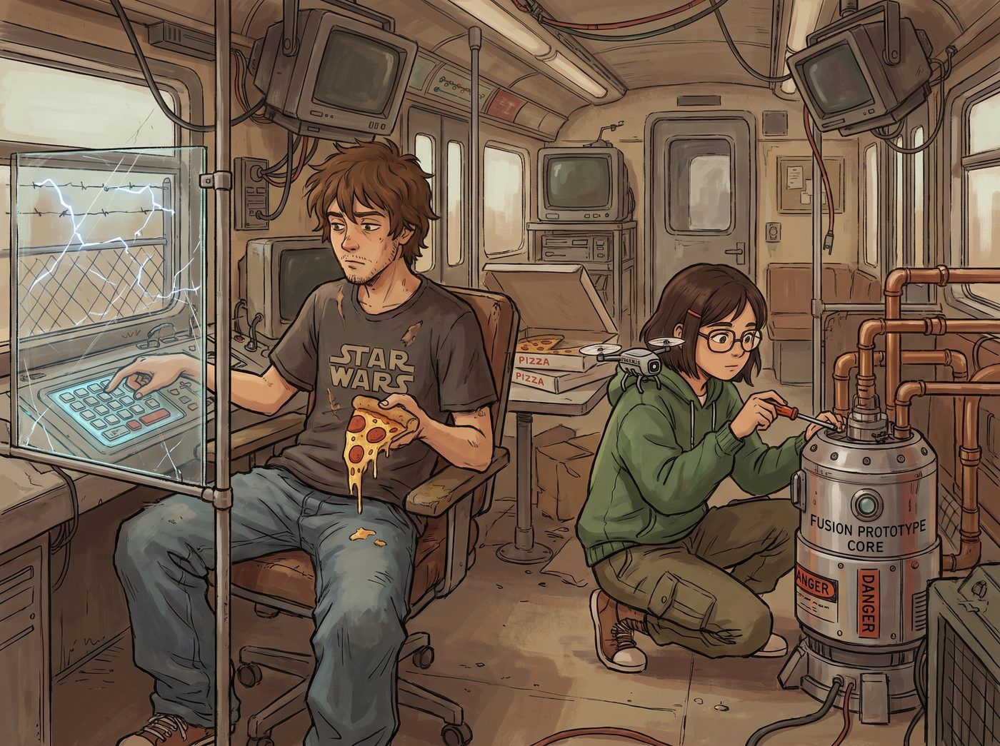

學霸的技術碾壓

當那幾輛掛著政府暗牌的黑色雪佛蘭防彈越野車再次駛入二號車廂外的空地時，DARPA 的首席科學家 Dr. Thorne 剛好透過車窗，看到了讓他血壓瞬間飆升到中風邊緣的一幕。
在那個被防彈玻璃和電網嚴密保護的核聚變原型機控制台前，沒有穿著全套防輻射生化服的專家，也沒有嚴陣以待的特種兵。
只有一個頂著一頭亂髮、穿著印有星際大戰圖案T恤的書呆子（Warren），正一邊咬著滴著油脂的義大利臘腸披薩，一邊在那個價值幾十億美金的控制面板上亂按。而他的旁邊，那個戴著黑框眼鏡、總是隨身帶著無人機的高智商理工女（Brooke），正拿著一把螺絲起子，肆無忌憚地在反應爐的核心冷卻管線上敲敲打打。
一、雙重標準的控訴
「我的老天！他們在幹什麼？！」Dr. Thorne 幾乎是踹開車門衝下來的。他帶著兩名三角洲特種兵衝進車廂，指著 Warren 和 Brooke 發出了殺豬般的慘叫：「你們這群瘋子！那可是裝載了超導磁體的等離子反應爐！如果油脂掉進控制台引發短路，我們半徑十公里內都會被蒸發！！」
Warren 嚇得差點把披薩塞進鼻孔裡，結結巴巴地舉起雙手：「我……我只是想看看它的托卡馬克環形磁場參數……這比學校實驗室裡的酷多了……」
Dr. Thorne 轉過頭，雙眼佈滿血絲地盯著正坐在沙發上悠閒喝咖啡的 Victoria，爆發出了關於雙重標準的終極控訴：「我們每小時付給你們二十五萬美金的租金，我們的工程師進來之前要搜身、簽保密協議、穿三級防護服！現在你們居然讓兩個連大學都沒畢業的毛頭小孩，一邊吃垃圾食物，一邊把我們的最高機密當成科學展覽會的玩具？！」
實習生 Lily 幽靈般地滑了出來，只用了寥寥幾句話，就把這場控訴壓了下去——她翻出一份《原子能法案》的豁免條款，把 Warren 和 Brooke 定義成受教育法保護的「無薪學術志工」，而 DARPA 則是受《國際武器貿易條例》約束的軍工採購方，兩者受完全不同的法律框架管轄，「這不是雙重標準，這是完美的法律實體隔離。」
Victoria 適時補了一刀，把這兩個大學生稱作自己帳本上的「教育慈善免稅資產」，而 DARPA 只是需要繳納高額所得稅的普通營業收入，「別拿你們自己跟我的免稅額度相提並論，你們不配。」
Dr. Thorne 被這套行政法規與資本運作編織而成的詭辯氣得說不出話，卻又找不到反駁的破綻。
二、理工女的物理暴擊
就在 Dr. Thorne 準備搬出五角大廈來壓人時，一直趴在冷卻管線上的 Brooke 站了起來。她推了推黑框眼鏡，面無表情地看著這位 DARPA 首席科學家。
「既然你們是來買數據的，那我順便提個醒。」Brooke 拿著螺絲起子指著螢幕上的一排紅字，「你們昨天導出的那組電漿體磁約束算法，裡面有一個致命的浮點運算錯誤。你們沒有把 Chloe 加裝的那根凱迪拉克排氣管的熱脹冷縮金屬疲勞係數算進去。如果按照你們的模型在內華達州進行點火測試，你們的備用線圈會在 1.4 秒內因為過載而炸成煙火。」
Dr. Thorne 愣住了：「妳……妳說什麼？」
「我剛才順手用 Python 寫了個腳本，幫你們把算法修補好了。」Brooke 毫不留情地補了一句學術鄙視，「順便提一句，你們的底層代碼寫得真的很像一坨義大利麵。」
Dr. Thorne 身後的兩名工程師已經悄悄打開了筆記本，開始瘋狂記錄 Brooke 剛才提到的公式。堂堂 DARPA 的頂級團隊，居然真的在偷抄一個大學生的作業。
三、跨界的技術默契
Brooke 轉頭看向 Chloe，眼神裡帶著同行間才懂的欣賞：「Chloe，妳的排氣管改裝思路簡直是天才，我們等一下可以討論一下如何用廢棄微波爐零件優化它的點火器嗎？」
「沒問題，書呆女。我就知道妳懂我的藝術。」Chloe 得意地和 Brooke 擊了個掌，兩人立刻湊在一起，一個拿著螺絲起子比劃，一個拿著扳手敲敲打打，討論起了某種聽起來完全不搭調、卻莫名讓人期待的「微波爐磁控管點火器」構想。
看著自己引以為傲的國防部團隊在智商上被全面輾壓，Dr. Thorne 徹底洩氣了，虛弱地問 Lily 是否可以開始他那昂貴的上機時間，保證不再掉任何披薩渣。
「可以，但基於您剛才大聲喧嘩對青年教育計畫造成的精神干擾，」Lily 溫柔地在平板上操作了一下，「我將從您的預付帳戶中扣除一萬美金的學術環境補償金。現在，請去門外穿上你們的防護服，排隊打卡。」
一直在旁邊觀戰的 Max，看著 Warren 和 Brooke 抱著披薩盒給 DARPA 團隊讓座，無奈地捂住了臉。而 Kate 則提著籃子走到門外，給那幾個正在苦哈哈穿防護服的特種兵一人發了一塊司康。
「今天也辛苦你們了呢。」小天使溫柔地說，「看著年輕的學生們和資深的科學家們在同一個地方追求真理，科學的傳承真是充滿了愛與奇蹟呀。」
特種兵們咬著司康，看著車廂裡那個正跟街頭機械師討論磁控管的理工女，以及那個穿著粉色睡衣的行政死神，心裡只有一個念頭：這個鬼地方，真的比阿富汗前線還要危險一萬倍。